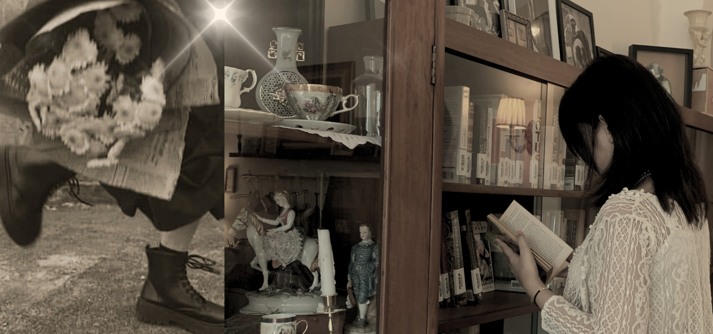
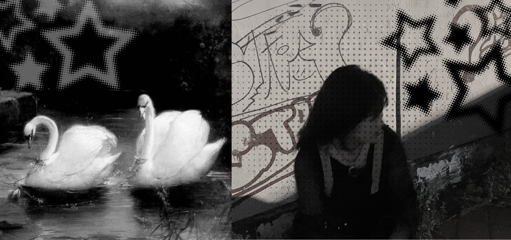

Here are the things you need to know about her.
Luna Akira Irfianta or usually called Akira was born in January, 9th 2007. She is currently studying at Budi Luhur Senior Highschool and is planning to continue her education in college to pursue a film degree.
Started from video editing and poster designing from middle school, design has been her passion from a young age.
She managed to develop her skills through Student Leadership Council as the head or Arts & Publication section and created several social media graphics, logo, holiday posters and event banners.
Accomplished her biggest project (Technopreneur 5.0) with brainstorming and implementing creative concepts to construct various creation and designs.
She demonstrates Brainstorming to lead teams and encourage a collaborative environment.
Known for her authenticity and having her own creative perspective on how she sees the world, her ability to think outside the box and consistently delivering innovative ideas to solve problems
Various Projects she had worked on...


{kind=link}
{kind=link}
{kind=link}
{kind=link}